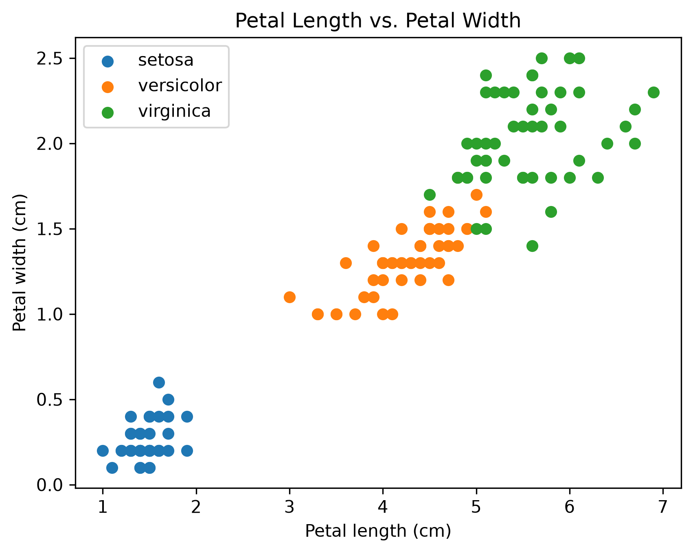
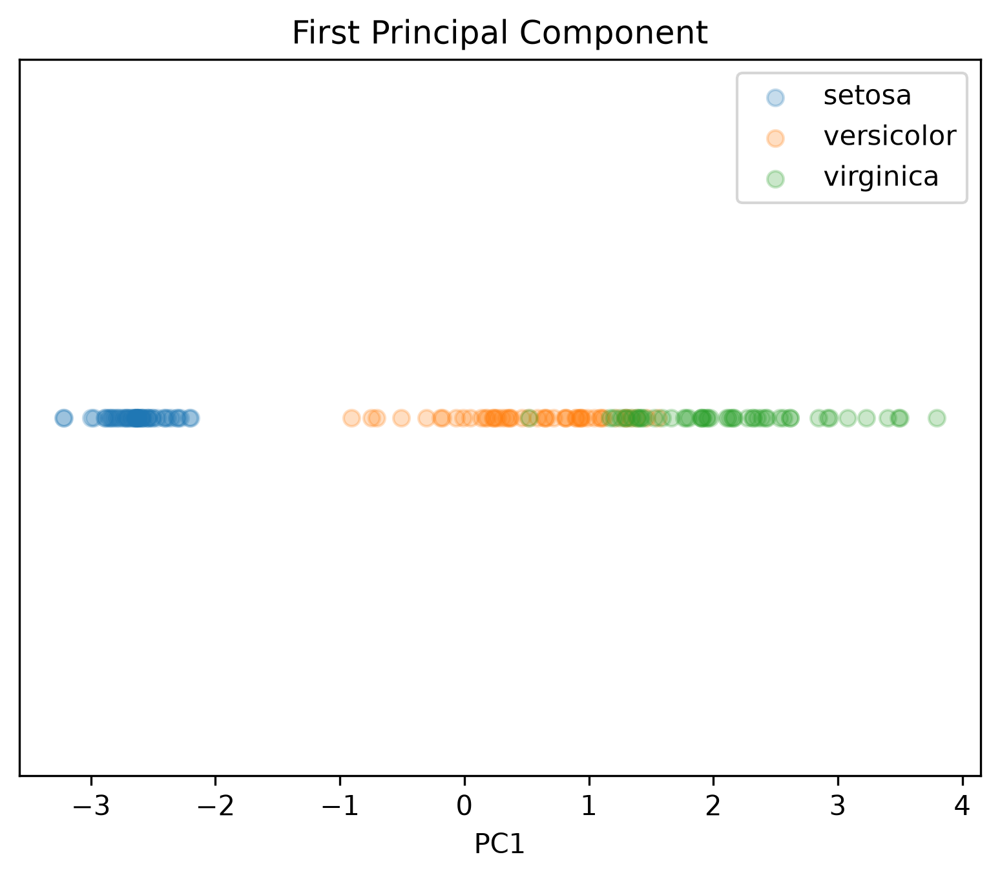
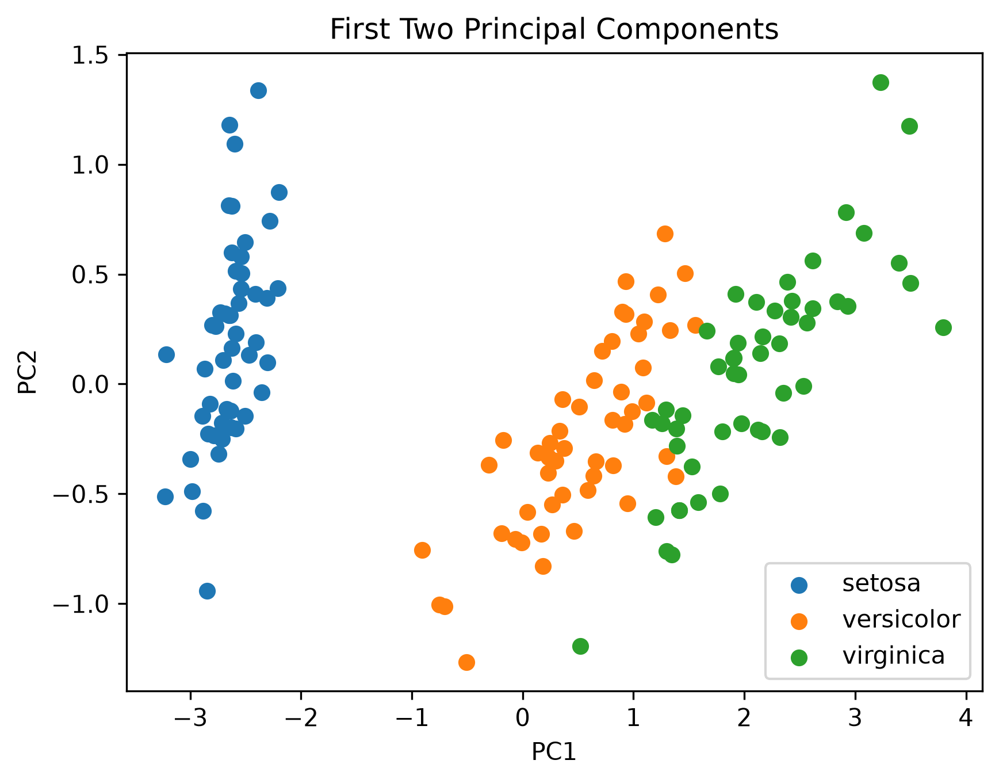
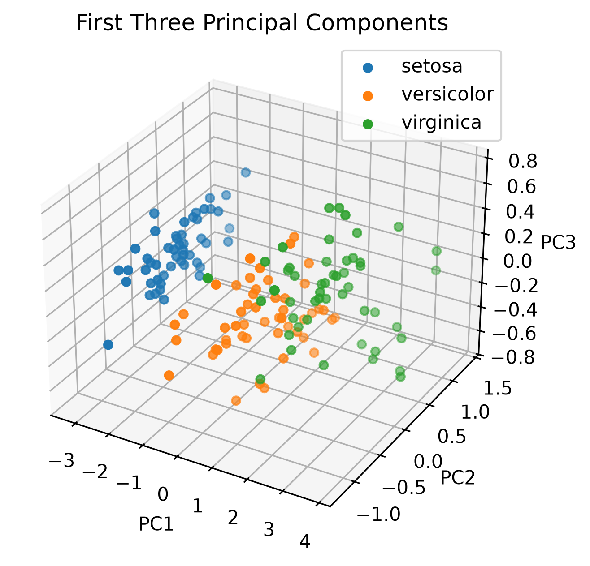
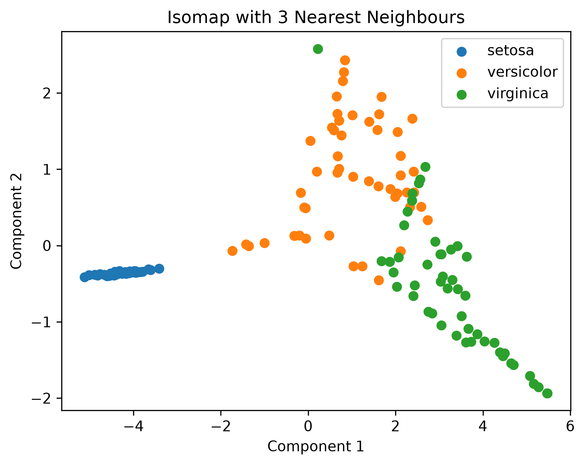

SYDE 572 - Assignment 3
Part 1: PCA by hand
What is the first principal component?
Given the data points with two features $(x_1, x_2)$: $(-2, -1), (-1, 0), (0, 1), (1, 2), (2, 3)$.
Step 1: Calculate the mean.
We can calculate the mean of each feature:
$$\mu_{x1} = \frac{(-2) + (-1) + 0 + 1 + 2}{5} = 0$$
$$\mu_{x2} = \frac{(-1) + 0 + 1 + 2 + 3}{5} = 1$$
Thus, the mean vector is:
$$\mu = (\mu_{x1}, \mu_{x2}) = (0, 1)$$
Step 2: Center the data.
Subtract the mean vector from each data point:
$$x_i^{\text{centered}} = x_i - \mu$$
This gives the centered data points: $(-2,-2), (-1,-1), (0,0), (1,1), (2,2)$.
Step 3: Calculate the covariance matrix.
Using the centered data matrix $X_c$, the sample covariance matrix is:
$$\Sigma = \frac{1}{n-1}X_c^T X_c$$
Multiply the centered matrices:
$$X_c^T X_c = \begin{bmatrix} (-2)^2+(-1)^2+0^2+1^2+2^2 & (-2)(-2)+(-1)(-1)+0(0)+1(1)+2(2) \\ (-2)(-2)+(-1)(-1)+0(0)+1(1)+2(2) & (-2)^2+(-1)^2+0^2+1^2+2^2 \end{bmatrix}$$
$$= \begin{bmatrix} 10 & 10 \\ 10 & 10 \end{bmatrix}$$
Finally, divide by $n-1=4$:
$$\Sigma = \frac{1}{4} \begin{bmatrix} 10 & 10 \\ 10 & 10 \end{bmatrix} = \begin{bmatrix} 2.5 & 2.5 \\ 2.5 & 2.5 \end{bmatrix}$$
Step 4: Find the eigenvalues.
Solve the characteristic equation $\det(\Sigma-\lambda I)=0$:
$$\begin{vmatrix} 2.5-\lambda & 2.5 \\ 2.5 & 2.5-\lambda \end{vmatrix}=0$$
$$(2.5-\lambda)^2-(2.5)^2=0$$
$$\lambda(\lambda-5)=0$$
Therefore, the eigenvalues are $\lambda_1=5$ and $\lambda_2=0$. The first principal component corresponds to the largest eigenvalue, $\lambda_1=5$.
Step 5: Find the eigenvector.
Solve $(\Sigma-\lambda_1 I)v=0$:
$$\begin{bmatrix} -2.5 & 2.5 \\ 2.5 & -2.5 \end{bmatrix} \begin{bmatrix}v_1\\v_2\end{bmatrix} = \begin{bmatrix}0\\0\end{bmatrix}$$
This gives $v_1=v_2$. Thus, $v=(1,1)$ is an eigenvector corresponding to the largest eigenvalue.
Step 6: Normalize the eigenvector.
Calculate the L2-norm of the eigenvector $v=(1,1)$:
$$\|v\|_2=\sqrt{1^2+1^2}=\sqrt{2}$$
Divide the eigenvector by its norm to obtain a unit vector:
$$w_1=\frac{v}{\|v\|_2} =\frac{1}{\sqrt{2}}\begin{bmatrix}1\\1\end{bmatrix}$$
Therefore, the first principal component is:
$$w_1=\begin{bmatrix} \frac{1}{\sqrt{2}}\\ \frac{1}{\sqrt{2}} \end{bmatrix}$$
What is the (L2-norm) reconstruction error of the point (3, 3)?
Step 1: Center the point.
We center the point $(3,3)$ using the mean $\mu=(0,1)$:
$$x_c = \begin{bmatrix}3\\3\end{bmatrix} - \begin{bmatrix}0\\1\end{bmatrix} = \begin{bmatrix}3\\2\end{bmatrix}$$
Step 2: Project onto the first principal component.
Calculate the projection coefficient:
$$z = x_c^T w_1 = \begin{bmatrix}3 & 2\end{bmatrix} \begin{bmatrix} \frac{1}{\sqrt{2}}\\ \frac{1}{\sqrt{2}} \end{bmatrix} = \frac{5}{\sqrt{2}}$$
Step 3: Reconstruct the centered point.
Multiply the projection coefficient by the first principal component:
$$\hat{x}_c = zw_1 = \frac{5}{\sqrt{2}}\begin{bmatrix} \frac{1}{\sqrt{2}}\\ \frac{1}{\sqrt{2}} \end{bmatrix} = \begin{bmatrix}\frac{5}{2}\\\frac{5}{2}\end{bmatrix}$$
Step 4: Calculate the reconstruction error.
The L2-norm reconstruction error is the Euclidean distance between the centered point and its reconstruction:
$$e = \|x_c-\hat{x}_c\|_2$$
$$= \sqrt{\left(3-\frac{5}{2}\right)^2 + \left(2-\frac{5}{2}\right)^2}$$
$$= \sqrt{\left(\frac{1}{2}\right)^2 + \left(-\frac{1}{2}\right)^2}$$
$$= \sqrt{\frac{1}{4}+\frac{1}{4}} = \sqrt{\frac{1}{2}} \approx 0.7071$$
What is the (L2-norm) reconstruction error of the point (3, 4)?
Step 1: Center the point.
We center the point $(3,4)$ using the mean $\mu=(0,1)$:
$$x_c = \begin{bmatrix}3\\4\end{bmatrix} - \begin{bmatrix}0\\1\end{bmatrix} = \begin{bmatrix}3\\3\end{bmatrix}$$
Step 2: Project onto the first principal component.
Calculate the projection coefficient:
$$z = x_c^T w_1 = \begin{bmatrix}3 & 3\end{bmatrix} \begin{bmatrix} \frac{1}{\sqrt{2}}\\ \frac{1}{\sqrt{2}} \end{bmatrix} = \frac{6}{\sqrt{2}}$$
Step 3: Reconstruct the centered point.
Multiply the projection coefficient by the first principal component:
$$\hat{x}_c = zw_1 = \frac{6}{\sqrt{2}} \begin{bmatrix} \frac{1}{\sqrt{2}}\\ \frac{1}{\sqrt{2}} \end{bmatrix} = \begin{bmatrix}3\\3\end{bmatrix}$$
Step 4: Calculate the reconstruction error.
The L2-norm reconstruction error is the Euclidean distance between the centered point and its reconstruction:
$$e = \|x_c-\hat{x}_c\|_2$$
$$= \sqrt{(3-3)^2+(3-3)^2}$$
$$= \sqrt{0^2+0^2}=0$$
Part 2: Data Visualization
Petal Length vs. Petal Width
The dataset of iris flowers visualized using their petal length and width shows a nice cluster. Setosa species are cleanly separated from the other two species, while versicolor and virginica only overlap slightly. Therefore, petal length and width are good features to use for distinguishing between the three species of iris flowers.

Part 3: Principal Components Analysis (PCA)
PCA on the Iris Dataset
We applied PCA to the Iris dataset using its four original features. The PCA axis vectors are shown below, with features ordered as sepal length, sepal width, petal length, and petal width.
- PC1: [0.3614, -0.0845, 0.8567, 0.3583]
- PC2: [0.6566, 0.7302, -0.1734, -0.0755]
- PC3: [-0.5820, 0.5979, 0.0762, 0.5458]
- PC4: [0.3155, -0.3197, -0.4798, 0.7537]



The plots show that Setosa is clearly separated from the other species, while Versicolor and Virginica overlap.
Part 4: Data Compression
We used pca.explained_variance_ratio_ to get the
explained variance ratios and calculated the cumulative variance
explained by the principal components. We obtained the following
results:
- First 1 PC: 92.46%
- First 2 PCs: 97.77%
- First 3 PCs: 99.48%
- First 4 PCs: 100.00%
How much of the variance is explained by our two-dimensional representation from the previous question?
The first two principal components explain approximately 97.77% of the total variance, preserving most of the variation in the original dataset.
How many PCs are required to explain 50% of the variance in the data?
The first principal component explains approximately 92.46% of the total variance. Therefore, only one principal component is required to explain at least 50% of the variance.
Part 5: Non-linear Components
Comparison of PCA and Isomap
Both PCA and Isomap produce similar visualizations of the Iris dataset, with similar separation between the three species. Setosa is clearly separated under both methods, while versicolor and virginica overlap a bit. PCA is able to retain a lot of information using two dimensions (about 97.77% of the variance). Isomap, while it is nonlinear, does not add much beyond this. It does not separate versicolor and virginica any better than PCA does, and the overlap between them remains in both plots.

Code:
from sklearn.datasets import load_iris
from sklearn.manifold import Isomap
import matplotlib.pyplot as plt
import numpy as np
# Load dataset
iris = load_iris()
X = np.array(iris.data)
y = np.array(iris.target)
# Apply Isomap using 3 nearest neighbours
isomap = Isomap(n_neighbors=3, n_components=2)
X_isomap = isomap.fit_transform(X)
# Plot results
plt.figure()
for i, name in enumerate(iris.target_names):
plt.scatter(
X_isomap[y == i, 0],
X_isomap[y == i, 1],
label=name
)
plt.xlabel("Component 1")
plt.ylabel("Component 2")
plt.title("Isomap with 3 Nearest Neighbours")
plt.legend()
plt.savefig("media/isomap_2d.png", dpi=300, bbox_inches="tight")
plt.show()